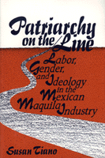

Women working in U.S.-owned border factories transform their roles in the economy and culture
Women working in U.S.-owned border factories transform their roles in the economy and culture


 Women working in U.S.-owned border factories transform their roles in the economy and culture
Women working in U.S.-owned border factories transform their roles in the economy and culture

|  |
Patriarchy on the LineLabor, Gender, and Ideology in the Mexican Maquila IndustrySusan Tianopaper EAN: 978-1-56639-196-2 (ISBN: 1-56639-196-2) |
In the Mexican maquiladora industry—the string of U.S. export-processing subsidiaries on the Mexican side of the border—women constitute the majority of workers. This comprehensive study of the maquilas in Mexicali, the capital of Baja California, analyzes the roles of these women workers and dispels the myth that they are docile and downtrodden. Rather, they employ creative responses to their work and domestic lives.
Susan Tiano investigates women assemblers in electronic and apparel maquilas as well as women workers in service jobs. Comparing the organizational structure and working conditions in these industries, she identifies trends in women's economic activity. What emerges is a multihued portrait of women who take on jobs outside the home for a variety of reasons and who are conscious of their productive and reproductive influence on a developing international division of labor. Linking fertility, age, education, and marital status to women's participation in the maquila industry, Tiano explores the gender consciousness of the women workers and of the men who attempt to dominate them, both on the line and in the home.
The processes and dynamics illuminated in Patriarchy on the Line resonate in other urban labor markets undergoing similar changes as transnational production becomes a global reality.
"Susan Tiano employs extensive field work in Mexicali's maquiladoras as a case study of the roles that women play within the evolving international division of labor."
—BorderLines
"Tiano concludes that working-class families do consider it acceptable for women to work outside the house; it gives them more input in family decisions, but men remain in the labor force in different occupations. The 'outward appearance of docility' covers women's methods of adapting. Tiano suggests that in the future, these women may strike for higher wages or leave the assembly plants and seek other employment."
—The Hispanic American Historical Review
Figures and Tables
Acknowledgments
1. Studying Women Workers in Export Industries
2. The Maquila Industry in Global Perspective
3. Women and the New International Division of Labor
4. Women, Employment, and Ideology in Northern Mexico
5. Fertility, Selective Recruitment, and the "Ideal" Worker
6. The Temporary Worker Image: Labor-Force Histories of Maquila and Service Workers
7. Women's Domestic Roles and Employment Histories
8. Wages, Benefits, and Employment Alternatives for Women: The "Maquila-Grade" Labor Shortage
9. Job Satisfaction and Labor Turnover
10. Acquiescence, Alienation, Accommodation, and Resistance: Maquila Employment and Women's Consciousness
11. Labor, Gender, and Ideology in the Maquila Industry
Abbreviations
Notes
References
Index
Susan Tiano is Associate Professor of Sociology at the University of New Mexico. She is coeditor of Women on the U.S. Mexico Border: Responses to Change (with Vicki Ruiz).
Women's Studies
Labor Studies and Work
Sociology
© 2015 Temple University. All Rights Reserved. This page: http://www.temple.edu/tempress/titles/1125_reg.html.